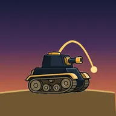
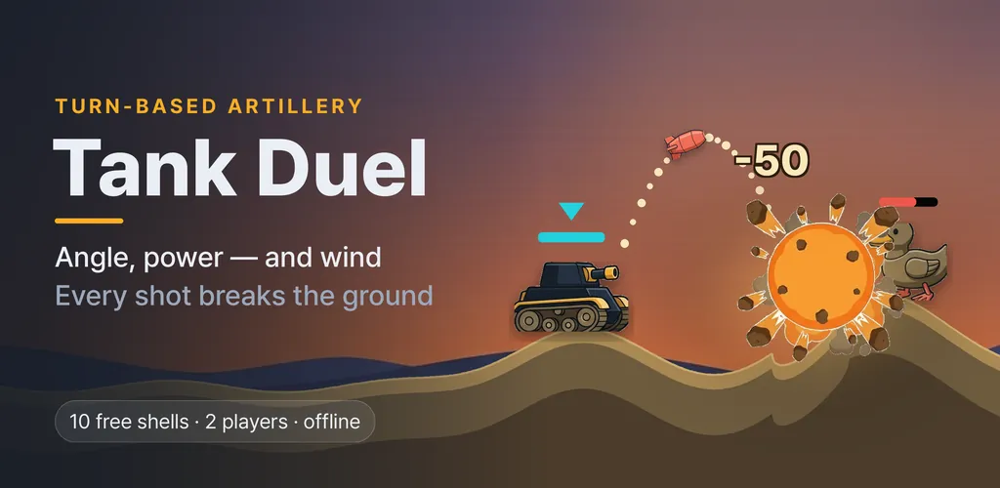
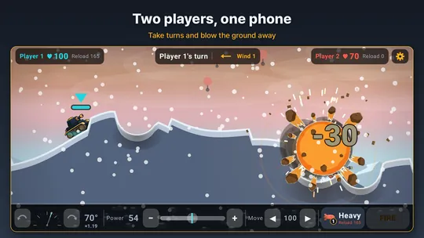
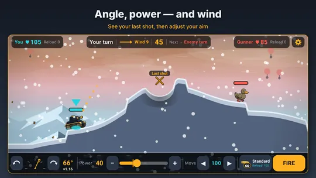
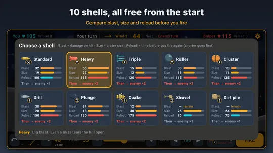
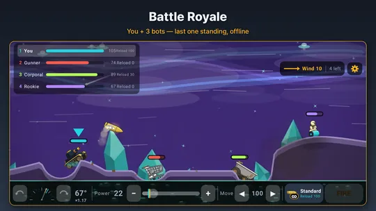
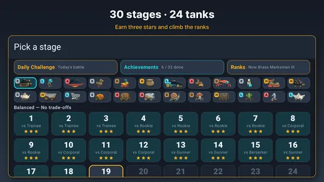
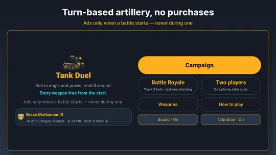

Tank Duel: Artillery Tank Game
Offline turn-based artillery duel on destructible ground. Read the wind, fire.







About this app
Set the angle. Pick the power. Read the wind. Fire.
Tank Duel is a turn-based artillery game where every miss teaches you something. Shells really dig into the ground, and when the terrain changes, the battle changes with it.
An honest opponent
The bot's aiming error is shown as a number right on the battle screen. Trainees miss often; Snipers get dangerous in about three shots. If you're tired of artillery games where difficulty is just a label, here you know exactly how accurate your opponent is before you fire.
10 weapons, all free
Standard, Heavy, Triple, Roller, Cluster, Drill, Plunge, Quake, Shovel and Dirt pile. There is no weapon shop - both sides fight with the same ammo. Bigger shells take longer to reload, so if you fire a Heavy your opponent may get two turns. Picking a weapon is a fight over turn order.
Aiming that makes sense
Drag toward where you want to shoot to get close, then fine-tune with the angle dial and the power scale before you press Fire. Your last shot and your last hit are marked on the dial and the power bar, so bracketing your shots feels natural. You can also drive your tank behind a hill or out of a crater.
The ground is a weapon
Every hit digs the ground. Once it's dug down to bedrock, the tank starts sinking. Knock the health to zero or bury your enemy - there are two ways to win. Cover them with a dirt pile, dig under them with the shovel, or shake a wide area with a quake shell.
Solo, two players, or four
- Campaign - 30 stages from Trainee to Sniper, up to three stars each
- Two players - take turns on one phone
- Battle Royale - you and three bots, last tank standing wins
- Daily Challenge - the same terrain, wind and opponent for everyone, every day
Progress that stays
Clear 32 achievements to unlock 24 tanks, from a kettle and a bathtub to a penguin and a paper boat. Each chassis has its own trade-off: light tanks move farther, heavy armor lasts longer. Stars raise your rank, and even a loss earns training points that make the next battle a little easier.
A living battlefield
Dusk desert, dawn snowfield, ruined city at night and an alien crystal plain. Sand and snow drift with the wind, so you read the wind with your eyes, not just a number. Explosions throw sparks and smoke, and a destroyed tank sinks into the ground.
Offline, no purchases
No server, no account - it even works on a plane. There are no in-app purchases; every weapon and tank is unlocked by playing.
About ads
This app is free and contains ads. Ads appear when you start a battle and at the bottom of the home and guide screens - never during a battle. After a loss you can optionally watch an ad for "One more shot".
Android · free with ads · Developer: RealTunaLove · Store listing in 17 languages
Background story: why I built it